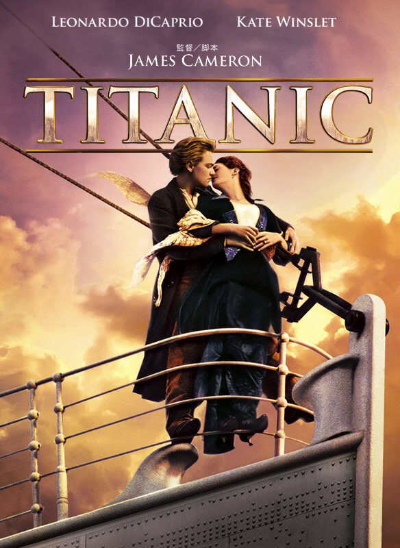

週末に観るべき映画第2弾 5選!!

公開日 2023/08/08

現在巷で有名である広告などが一切ない『君たちはどう生きるか』みなさんご覧になりましたか？
僕自身もいまだに見れていないので期間中に絶対見に行きたいと思っています。
1,あの有名漫画の実写化第3弾【キングダム 運命の炎】
この映画は今年7月28日に公開されたあの超人気漫画「キングダム」の実写化映画第３弾であり、原作ファン全員が待ち侘びていた作品です。
大まかなあらすじは、主人公であり前作の活躍により百人将になった秦国の信が元秦国六大将軍の1人である王騎の元で修行を受けて、その成果を趙国との戦いで見せていくというものです。
僕は映画が終わるタイミングにびっくりしてもう終わっちゃたの？といった感じでした。
2,君膵に続いての胸キュン作品【君は月夜に光り輝く】
この映画は「君の膵臓をたべたい」の主演でもあった永野芽郁と北村匠海、また監督でもあった月川翔により映画化されました。
大まかなあらすじは、不死の病である発光病に罹ってしまい寿命がもう長くない女子高校生の死ぬまでにやりたいけどできないことを、男子高校生が代わりに行いその体験動画を見せることによって女子高校生は人生の楽しみを見出した。しかし、死はもうすぐそこまで迫っていて…
3,さらばコンプレックス。【SING/シング】
この映画は動物が暮らす世界で、コンプレックスを抱えた動物たちが、シングつまり歌で自分の回りの世界を180度変えるために奮闘する話です。
コアラやゴリラ、ブタなどの多くの動物が自分の能力で世界を切り拓いていく感じが見ていて感動するポイントです。
次回作もあるので、ぜひ皆さんイッキ見しましょう！！
4,語り継がれるべき名作【TITANIC】
この映画は有名すぎて内容知っている人が多そうなので紹介するか迷いましたがやっぱり名作をまだ見ていない人へ届けたいと思い、紹介することにしました！
もちろん複数回見ている人にも楽しんで欲しいです。
大まかなあらすじは1912年4月14日の深夜、北大西洋で実際に起きた水難事故を映画化したものです。
映画内に登場するジャックとローズのラブストーリーは完全にフィクションであるが、実在したカップルをモデルにした老夫婦が登場します!
またいろんな隠し要素が隠されており何度も何度も見返したい作品になっています。
もし一度も見たことがない人がいたら絶対にご覧ください！
5,顔は見えないけれどあなたが好き【きみの瞳が問いかけている】
この映画の大まかなあらすじはある日の不慮の事故によって目が見えなくなってしまった女性だが、悲観的になることなくすごく明るく振る舞っていた。
そんな女性はふとした勘違いで元キックボクサーの青年と出会う。
障害を気にせず明るく振る舞う彼女と青年はいつしか恋に落ちる。
しかし、彼女の身に起きた事故の内容を聞いた青年は間接的とはいえ、事故の原因が自分にあったと気づいてしまう。
彼女たちはいったいどうなってしまうのだろうか…
まとめ

今回も週末に観るべき名作を5つ紹介しました。
参考になりましたら幸いです。
次回の記事もお楽しみに！！